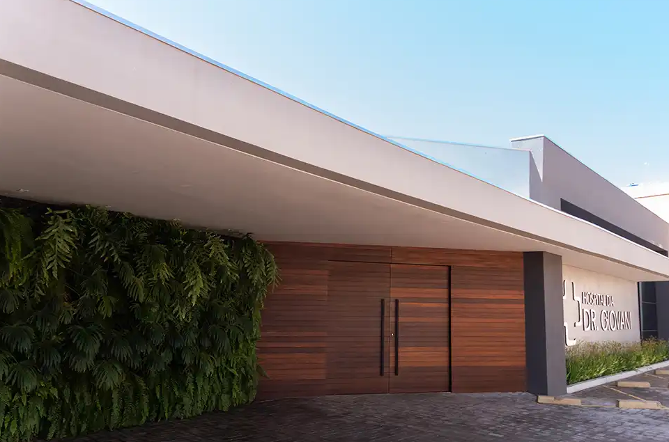

Quem Somos
Conheça a essência e o compromisso do Hospital Dia Dr. Giovani.
Quem Somos
O Hospital Dia Dr. Giovani foi inaugurado em 2009 pelo médico Dr. Giovani Fonseca, juntamente com sua esposa, enfermeira, Elis Ribeiro, na cidade de Janaúba.
Realizamos cirurgias de pequeno e de médio porte em diversas especialidades na área da saúde, consultas médicas, exames e procedimentos ambulatoriais. Além disso, oferecemos mais de 20 especialidades na área da saúde.
O nosso corpo clínico é formado por médicos qualificados, competentes e experientes, atentos à importância da educação continuada e da atualização em novas tecnologias.
O Hospital valoriza a promoção do crescimento profissional e humano de todas as pessoas que nele trabalham. Por isso, os nossos profissionais são altamente qualificados, com enfermeiros dedicados e funcionários comprometidos. Cada membro da equipe desempenha um papel fundamental para conciliar a técnica com carinho, atenção e respeito às necessidades da pessoa.
O nosso objetivo é oferecer assistência médica de qualidade, promover a educação em saúde e servir como uma fonte de apoio e de cura para os nossos pacientes que se situam na região no Norte de Minas.

História
A história do hospital está ligada à trajetória do seu fundador. Em 1995, Dr. Giovani iniciou os seus atendimentos como cirurgião geral e com especialidades também em endoscopia digestiva e em ultrassonografia em Janaúba.
Desde então, os serviços médicos foram ampliados, o que motivou o Dr. Giovani a migrar a sua clínica Centro Médico Dr Giovani para o Hospital Dia.
Dr. Giovani Fonseca
CRMMG: 18401 / RQE Nº: 38133Em 2023, iniciou o projeto de expansão de suas instalações, com novos consultórios médicos e com o novo nome Hospital Dia Dr. Giovani e tudo isso para proporcionar aos seus pacientes mais conforto, aumentando a gama de especialidades e garantindo, assim, a modernidade em seus atendimentos.